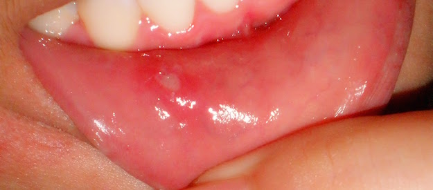

Mouth Sores

Mouth Sores
They form on the inside of the lips or cheeks. They are usually round or oval in shape. Bite injuries to the tongue or inside the cheek are the common causes of mouth sores.Symptoms
Symptoms of mouth sores include:
• A round sore or sores inside the mouth
• Loss of appetite
• Irritation of the sores by salty, spicy or sour foods
• Problems with chewing or toothbrushing because of the tenderness
• Suffer from acute pain in the mouth
How to treat mouth Sores
Homely remedies include:
• Drink plenty of fluids.
• Regularly rinse your mouth out with warm, slightly salted water.
• Keep your mouth clean.
• A daily intake of curd 3-4 times a week reduces the occurance of sores.
• Avoid spicy and sour foods until the sore heals.